Conexión remota
1. Instalar un servidor SSH en Linux
Crear usuarios
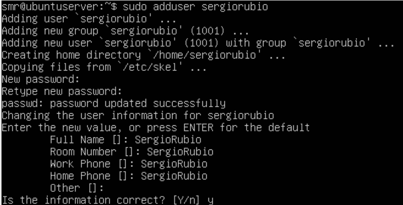
Instalar el servidor SSH
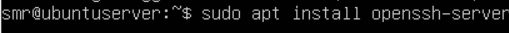
Probar conexión desde Windows (Putty)
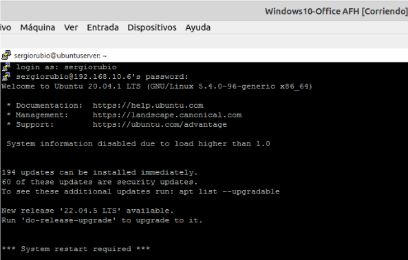
Probar desde otro Linux
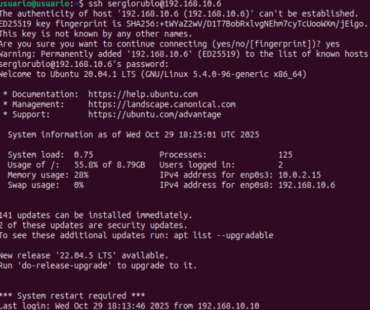
Conexión sin contraseña (clave pública)

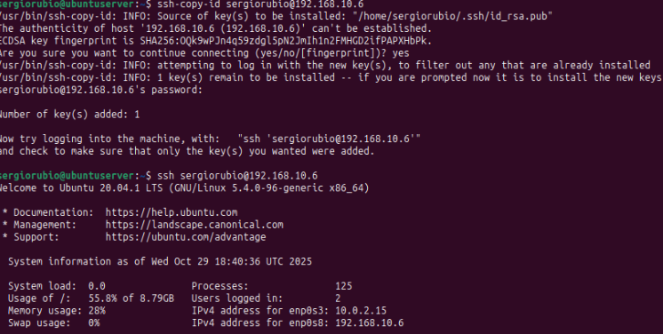
2. Conexión de escritorio remoto en Windows (RDP)
Activar RDP
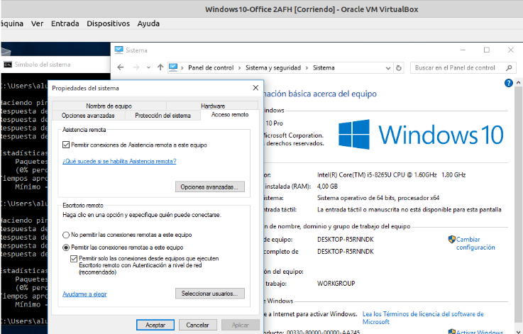
Conexión desde cliente RDP
- Windows:
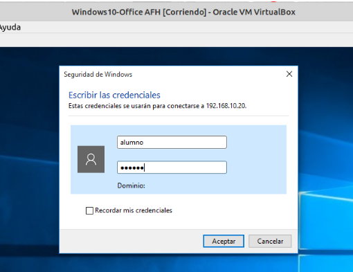
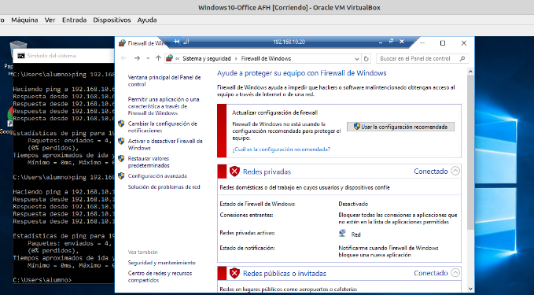
- Ubuntu:
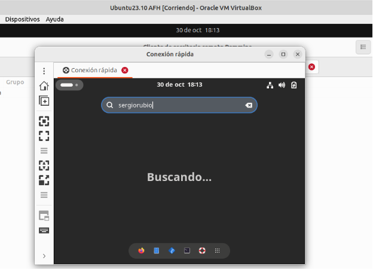
3. Instalar un Teamviewer en equipo windows y en otro Linux
Conectar a administración remota desde:
- Otro equipo windows y desde otro Linux
- De Windows a Ubuntu:
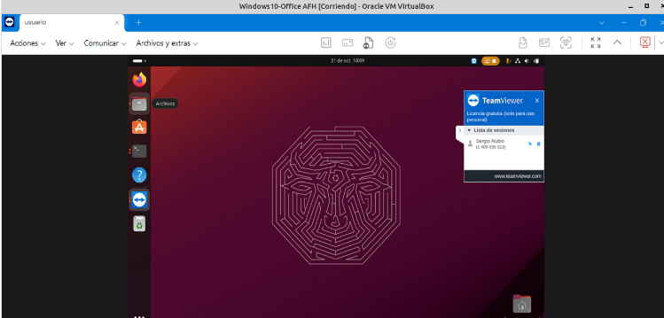
- De Ubuntu a Windows:
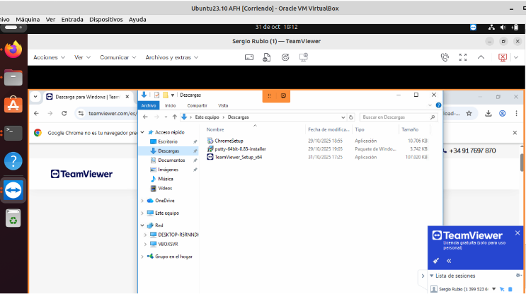
- Desde móvil:
- Windows:
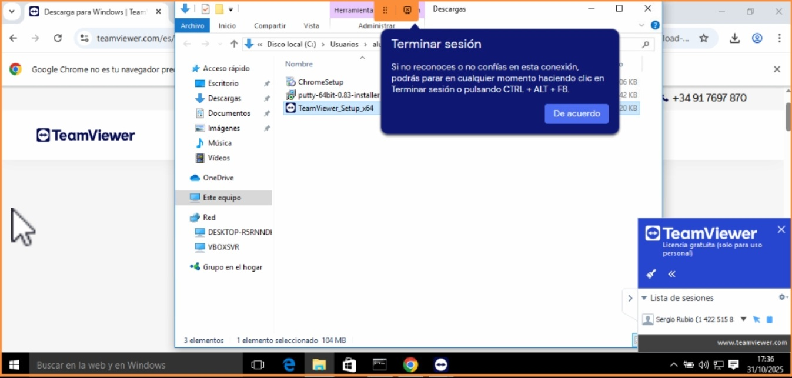
- Ubuntu:
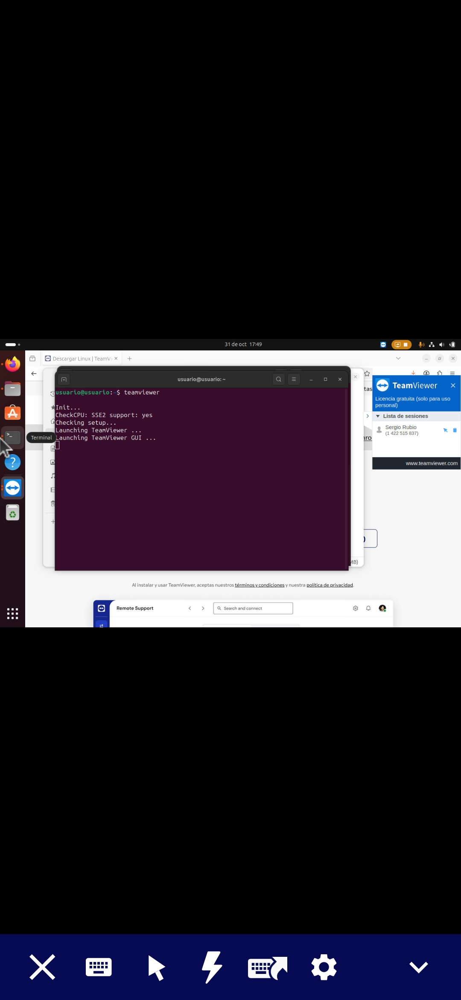
- Conectar en modo presentación y ver las opciones disponibles
- Otro equipo windows y desde otro Linux
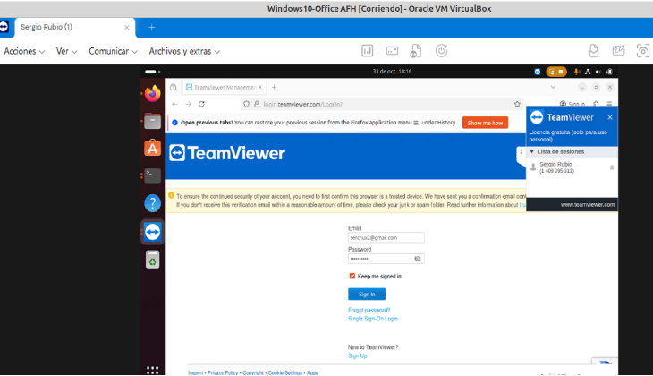
- Windows:
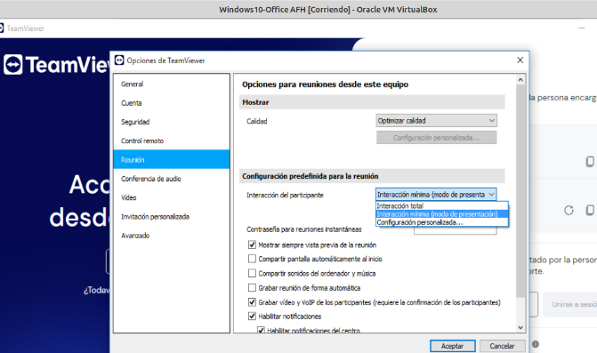
- Ubuntu:
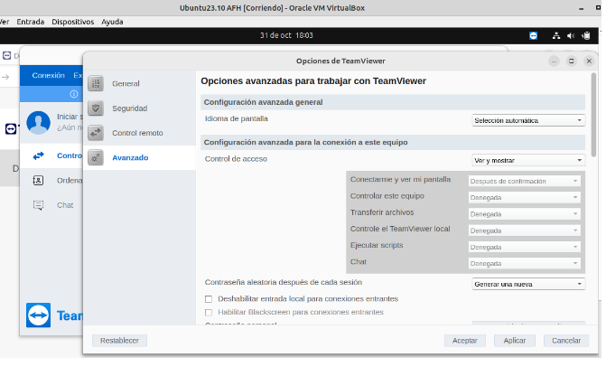
- Desde móvil:
- Windows:
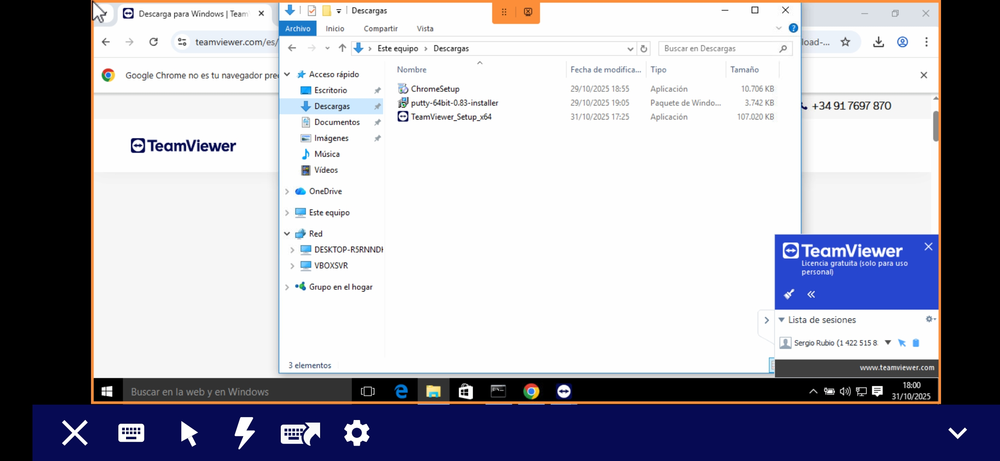
- Ubuntu:
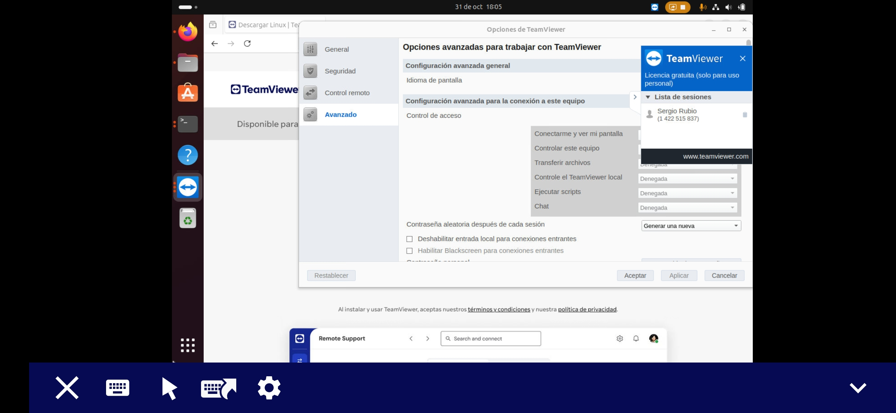